This prints a guide for you to help fill out your GST/VAT/HST return or BAS based on the previously finalised GST/VAT Report. Not available for all countries.

Cash flow using Ledger Daily report
To help navigate the standard MoneyWorks reports and ones that you have created, MoneyWorks provides a handy report index.
To open the report index:
The Index to Reports window will be displayed. This displays all reports (and folders) in the Reports folder as a hierarchical list.
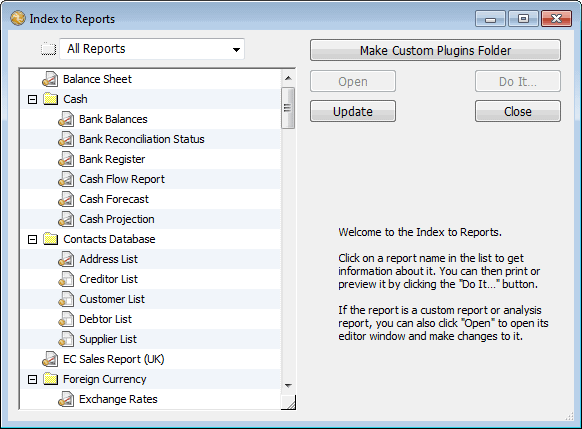
To locate a report in the list: Use the vertical scroll bar to scroll through the list, or type the first few characters of the report’s name to automatically highlight the report. Press the right arrow key on your keyboard to take you to the next report in alphabetic order (or press left arrow to go backwards).
Displaying report information: Click on a report in the list to display information about it. The information is displayed on the right side of the window, and includes the type of report (built-in, custom, chain or analysis), as well as any help text associated with the report.
To see only custom reports: Set the Folder pop-up menu above the list to
Custom Reports.
To see only standard reports: Set the Folder pop-up menu to Standard Reports.
Collapsing a folder: To collapse a folder and hide any reports in it, click on the control at the folder’s left. Click the control again to expand the folder.
Windows:
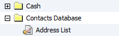
Mac:
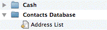
Or hold down the Shift key and select the report from the Reports menu.
If you create new reports while the report index window is open, these will not automatically appear in the report list. Clicking the Update button will refresh the list to incorporate any new reports.
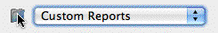
Each report is stored as a file in the Reports folder in your Standard and Custom Plug-ins folders. The Index to Reports (and the Report menu itself) are a representation of the structure of these Reports folders.Tip: If you go into the Finder (Mac) or Explorer (Windows) and move (or remove) folders or files from the Reports folder,
To print a report from the Index:
this will be reflected in the both the Reports menu and the Index (you may need to click the Update button). You can go directly from the Index to Reports to the Custom or Standard Plug-ins folder by clicking on the folder icon
next to the Reports pop-up menu.3
Click in the folder icon next to the Reports pop-up menu to open the Reports folder.
Click the Do it... button
The Report Settings window for the report will open.
You can also print a report by selecting it under the Reports menu.
To modify a customisable report (i.e. any report but a MoneyWorks built-in one):
The layout window for the report will open. The format of this depends upon the type of the report (custom, chain or analysis).
A variety of reports come with MoneyWorks. Most of these can be altered to meet your own special requirements if you have MoneyWorks Gold — see Modifying an Existing Report.
Note: Not all reports are documented here. Some reports have a
Documentation Mode which describes what the report does.
This works in the same manner as the aged receivables report (see below), except that it prints an aged list of creditors. Creditors cannot be aged manually.
The aged receivables report (not Cashbook) provides a summary of outstanding sales invoices by age of invoice. The report can base the ageing on:
Manually: As done by the Age Receivables command. You normally do this after printing your statements (usually at the end of each month).
Calculated: The ageing is calculated “on-the-fly” when the report is printed. This is independent of any manual ageing. Calculated ageing can be done for 7 days, 14 days, 30 days and by period. When calculated by days, the transaction date of the invoice is used, whereas the period of the invoice is used for ageing by period. Retrospective reports can be done when ageing is calculated by period.
When you print the Aged Receivables report, the Print Names List window is displayed. Choose the type of ageing that you wish the report to use.
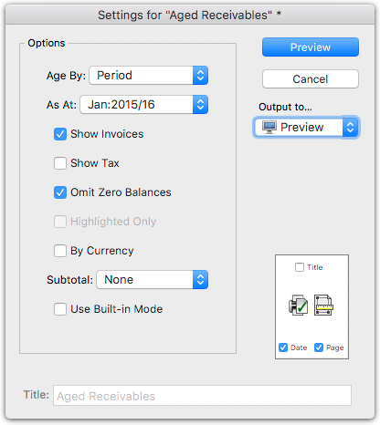
Age By: The method to use to determine the ageing (see above).
As At: If you have selected Calculated by Period, the report will show the aged balances as at the end of the nominated period. This is particularly useful for reconstructing your outstanding receivables or payables at the end of a financial year. The amount of GST/VAT that was outstanding on invoices at the end of the nominated period is also shown.
Note: Printing aged reports retrospectively will take much longer than printing the current set. It operates by looking at individual transactions for all the debtors on or before the nominated period. If you have purged some
of the original invoices, it may not be possible to reconstruct the report.
Show Invoices: If set, a list of outstanding invoices will be displayed under each debtor.
Show Tax: If set the GST/VAT/TAX amount will be shown for each debtor.
Omit Zero Balances: If set, debtors with zero balances will be omitted.
Highlighted Only: Set this to print just the highlighted debtors in the Names list (it will be disabled if none have been highlighted). This will be available if you have highlighted one or more debtors in the Names list and activated the report by clicking on Aged Receivables in the sidebar.
By Currency: If set, the debtors will be listed by currency (otherwise they will be intermingled in a single list which has totals for each currency).
Subtotal by: Choose from one of the custom or category fields if you want your report segmented by the values in that field.
Use Built-in Mode: Prints the report using the older MoneyWorks 6 built-in technology. For large files this can be faster than using the standard aged reports (which are done in the MoneyWorks Report Writer), but lack the ability to be customised in any way.
Note: You can also print aged receivables reports from the Debtor tab of the Names list, allowing you to report on selected (highlighted) debtors only.
Similar to the Aged Payable and Receivables reports, except that the ageing is calculated by the due date of the invoice and not by the invoice date.
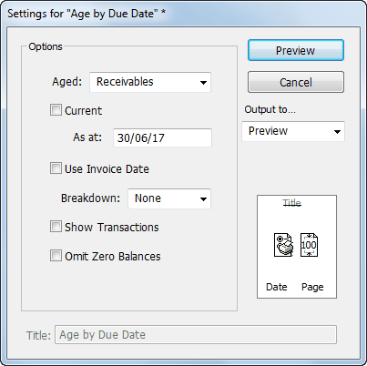
The report can be run for either your payables or receivables. It is not period based and can be run as at any date (provided the transactions have not been purged).
Lists the transactions that were entered after the specified date, but posted into a prior period, and the changes in any ledger balances resulting from these transactions. If the Summary Only option is selected, the transaction information is suppressed and only the ledger balance changes are shown.
The Balance Sheet gives a statement of position of the company at a point in time, and (for MoneyWorks Gold) can be printed in any currency that is set up in MoneyWorks.
This report (which is in the Cash section of the Reports menu) prepares a list of all transactions from the nominated date against the specified bank account. The report includes a running balance and can optionally show the first few allocations (although this makes the report run noticeably slower). If the Daily Graph option is selected, a chart like the one below is also prepared.
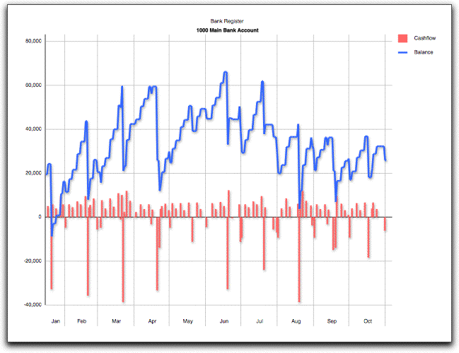
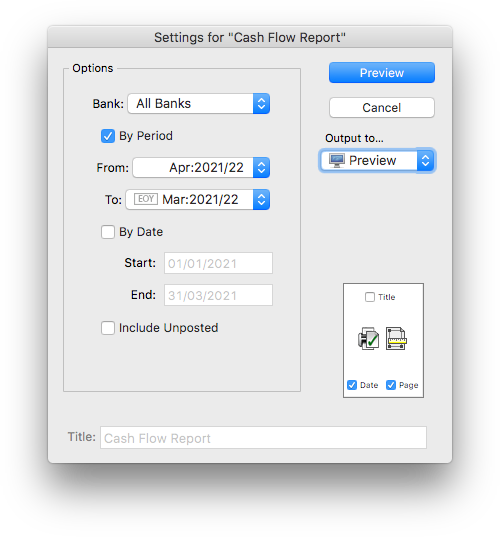
This report shows you the sources and dispositions of your cash for all banks or for a nominated bank account over the specified period or date range. When you print this report, the Cash Flow Settings dialog is displayed instead of the normal Report Settings dialog. Don't confuse this report with the more formal Statement of Cash Flows report.
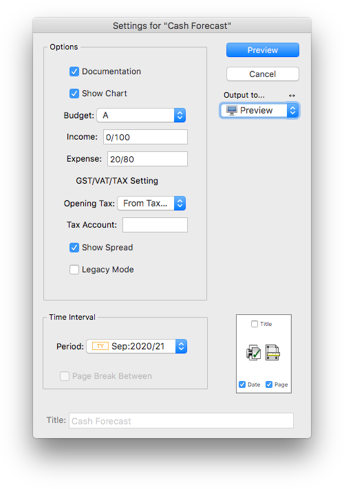
You nominate which (local currency) bank you want the report printed for from the Bank pop-up menu. The default is set to All Banks, which will give a consolidated cash flow report (this is over all banks, including foreign currency and unbanked accounts).By Period: Choose the period range for the report. Unlike the period settings in other report settings dialogs, choosing more than one period for this report results in a single amalgamated report covering all periods rather than a separate report for each period.
By Date: Choose this to report on the cash flow between two given dates.
Include Unposted: Will include the effect of unposted transactions.
The Cash Forecast report provides a 15 month cash forecast (in local currency), and is the sort of report your bank manager would like to see. It is calculated by spreading the budget figures (in either the A or B budget) across up to five subsequent periods based on a specified “spread”. Default spreads can be specified for inwards and outwards items, and these can be overridden for individual general ledger accounts.
The accrual budget is converted to an estimated cash budget by spreading it over the accrued and subsequent months by a percentage "spread". A spread is specified by a series of percentages, separated by slashes. Thus "10/60/30" indicates that 10% of the value is in the current month, 60% in the following month, and 30% in the next month.
A default spread can be specified for incomings and another for outgoings in the report setup (the Income and Expenses fields). This will apply to all general ledger accounts, unless it is specifically overwritten in the Cash Forecast field of the account record. An accrued value can be spread over a maximum of five periods.
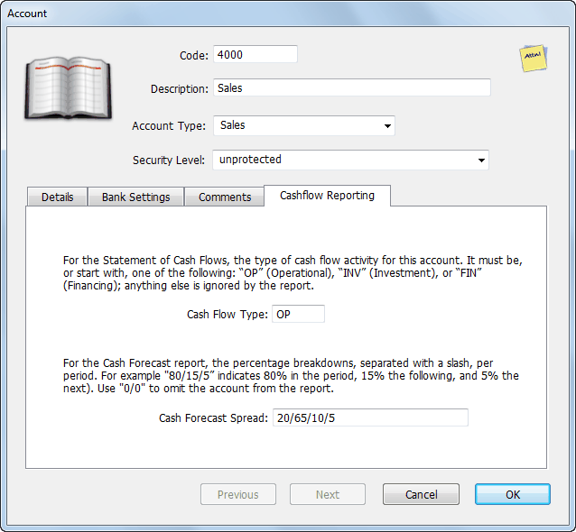
A spread of "0/0" means no impact in the report (so should be used for non- cash accounts such as depreciation). For a 100% spread in the current month (for example if all your sales are cash sales), use "100/0" (a "/" is required in every spread).
Note that the spreads do not have to add up to 100%. Thus you might have a spread for a Sales account of "25/50/15/6/2" indicating that 25% are paid in the same month (effectively cash sales), but that 2% are bad debts (as the total is 98%).
The initial values required for the cash flow are based primarily on the GL balances at the nominated period that the report is run on. Thus if you are part way through a month, you should elect to run the report starting in the prior period.
Bank Accounts: All bank accounts (current and term) are included in the calculation of the opening cash position. If you have term accounts that you want to exclude, use the "0/0" spread.
Payables/Receivables: These are not included in the report as any outstanding invoices are already represented in the general ledger balance (and hence this would be double counting).
GST/VAT/Tax on AR and AP: Where GST/VAT is paid on a Payments/Cash basis, the tax liability is not incurred until the invoice has been paid. This is factored into the report, with the proviso that the tax percentage is based on the tax on current outstanding invoices.
Thus if your current receivables is composed of 20% GST/VAT exempt invoices, it is assumed that only 80% of your starting AR balance is liable for GST/VAT.
For GST/VAT on an Invoice/Accruals basis, the tax liability is incurred when the invoice is raised/received, and hence will be accounted for in the opening GST/VAT liability in the GL.
Opening GST/VAT/Tax Liability: As it is impossible to determine accurately the opening tax liability at the time the report is run, this is determined by the amount of tax paid previously. You can override this in the report settings if you have a better estimate.
Other accounts: The first period value is calculated as the budget for that period adjusted for the account's spread, plus the actual in the previous period(s) adjusted for the appropriate spread. Similarly for periods 2, 3, and 4 (the rest are 100% budget based).
Because the cash flow can be strongly influenced by any tax/VAT/GST collected, the effective tax rate for each of the GL accounts is inferred by looking at the actual transactions in the previous 3 periods (if none, the account's tax rate is
used). This strategy allows for an estimate of any tax-free sales or purchases. You can modify the length of time being looked back by changing the "taxPerOffset" value in the report itself (line 4). A value of 0 or less will force the use of account tax rates.
Show Chart: Append a 15 month chart of forecasted cashflow at end of report.
Budget: Specify which accrual budget ("A" or "B") on which to base the report. Choosing "A+B" will add both budgets, allowing you to have a base budget and expore changes in the other.
Income: The default spread to use for all "Income" accounts (i.e. all incoming cash, including credits to fixed asset accounts).
Expenses: The default spread to use for all "Expense" accounts (i.e. all outgoing cash, including debits to term liability accounts).
Opening Tax: How to calcuate the opening tax (GST/VAT) liability:
Same as Last Payment: Based on the last GST/VAT/Tax payment made
From Tax Account: Based in the value in the budget for the nominated Tax Account (which should be specified in the following field).
Tax Account: The account code to use to get the opening tax liability if the Opening Tax is set to From Tax Account. This should be the Tax Holding account. If you have a tax multiplier applied to your income (such as Provisional Tax in New Zealand), you can specify the percentage in the comments field of the tax account delimited by [ ] (e.g. [5.2] for 5.2%). The Tax payments will be increased by this percentage.
Show Spread: If set, the specific spread for each GL codes are shown on the report in braces (e.g. {20/75/5})
Period: The period from which to run the report and extract opening balances. You will probably always set this to be the previous period, as the current period will not be complete (and hence the balances wrong).
Legacy Mode: Ignores the value in the CashForecast field and instead gets the spread for each general ledger account from values in Comments field enclosed in curly brackets, for example {10/95/5} — this is how the report had to be configured prior to MoneyWorks 8. Additionally when this option is on, accounts with "0/0" in the category4 field will be omitted from the report.
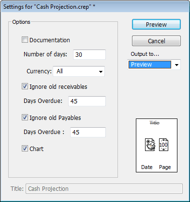
The Cash Projection report prints a report of your expected short term cash flow based on posted recurring transactions and outstanding invoices. The report is presented as a running bank balance (based on current asset bank accounts), with an optional daily chart available.
The report always starts on the current date, and you specify the number of days into the future to print the projection for. Bear in mind that it is not really practical to try to project more than about 30 days into the future (for a longer term forecast, use the Cash Forecast report).
If you have overdue invoices, they will appear on the report as receipts/ payments at the end of the following month, unless they are explicitly excluded by one of the Ignore Old report options.
Payments and receipts that are specially marked by a value of “R/n” in the analysis field will also be included. The value of n is used to indicate the number of days between recurrences (e.g. a value of R/14 will recur every two weeks). Provided the first recurrence will be after today, the transactions will appear in the report as recurring payments/receipts. This allows you to include the effect of non-recurring but regular transactions, for example payroll transactions imported from an external payroll system. These transactions are included regardless of whether they are posted or not.
Note: Transactions that have a value of “R/0” in the analysis field will be omitted. This allows you to specifically exclude selected invoices, recurring transactions or GST/VAT/Tax journals from the projection.
Number of days: The number of days to project into the future.
Currency: The report can be run for all currencies, or just a nominated one.
When run for all currencies, today’s system exchange rate is used to convert the balances of foreign currency bank accounts and transactions to the local currency. When run for a selected currency, only bank balances and transactions in that currency are included (and the report is printed in the selected currency).
Ignore Old Receivables: Turn this on to omit sales invoices that are already more than a the specified number of Days Overdue on the grounds that you are not really sure when (or if) they will be paid.
Ignore Old Payables: Turn this on to omit purchase invoices that are already more than a the specified number of Days Overdue.
Chart: Append a chart of the projected future bank balances.
Note that if there is a GST/VAT/Tax journal present less than 20 days old (provided it does not have a value of “R/0” in its analysis field), a payment, dated twenty days after the journal date, will be included to account for the expected tax payment. No allowance is made for refunds.
A listing of the chart of accounts, with optional balances. The report can be printed to show the departments associated with each account, and can be ordered by category, type, tax code etc.
Lists the “outgoings” GL accounts (i.e. expenses, assets) with their current balances and the items committed on outstanding purchase orders, to give the balance remaining against a nominated budget. Can be run for individual departments or classifications.
This report prepares a summary of the activity over a nominated date range. It includes a simple profit and loss report, the movement in cash, receivables and payables, and an optional listing of the transactions. It is prepared based on either the date of the transactions, or the date they were entered. It is also a handy report if you want to see a simple P&L for a given date range (as opposed to one by accounting period). A similar report is included as a dashboard panel.
If you just want a list of transactions entered today, go to the Entered Today view of the Transaction list and click either Print List or Print Detail.
A listing of departments with their associated accounts and groups. The report can be ordered by department or group. Use the Chart of Accounts report to see which departments are associated with each account.
To print an historic debtors or creditors reconciliation report, use the Aged Receivables (or Aged Payables) report, set the Ageby to Period, and choose the reconciliation period from the As At period pop-up menu. This report may take some time to prepare.
A summary report giving an overview of income and balance sheet information, and key financial ratios. Can be run for a month, quarter or year to date.
This prepares a summary of your GST inputs and outputs and is used to prepare your GST/VAT/tax return to your local friendly tax authority (ATO, IRD, IRS, HMRC etc.) depending on your country —see Preparing Your GST Return
This prints a guide for you to help fill out your GST/VAT/HST return or BAS based on the previously finalised GST/VAT Report. Not available for all countries.
Cash flow using Ledger Daily report
Prepares a chart of daily movements or balances for the highlighted records in the Accounts list for the 12 periods up to the nominated period. This allows you to visualise your cash flow, sales, purchases etc at a much finer level of detail than just ledger balances. The chart on at the start of this section was prepared by highlighting the bank accounts in the Acme Widgets accounts list.
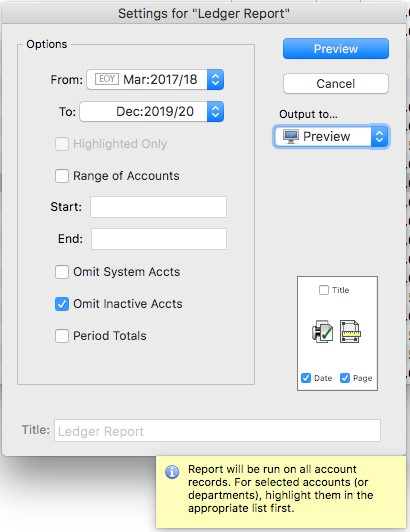
The Ledger Report produces a printout of all transactions for all accounts that have experienced some activity over a nominated range of periods—the period information will be printed consecutively for each account or department, with a running balance.
Highlighted Only: If set, the report will only print the ledgers for the highlighted records in the Accounts or Department list (the Department list takes precedence). This allows you to print a ledger report for selected Departments or Accounts. The option is only available if records in either of the lists have been highlighted.
Range of Accounts: If set, the report will be run for all ledgers between (and including) the Start and End accounts specified. The selection is done alphabetically.
Omit System Accounts: Setting this option will exclude system accounts (GST control, accounts receivable/payable control, and bank accounts) from the report. Since virtually all transactions use these, this makes the report much shorter.
Omit Inactive Accts: If set, any accounts that have had no activity in the nominated period range (i.e. transactions posted against them) will be excluded.
Period Totals: Turn this on if you want the ledger totals at the end of each period.
An audit report that lists all overpayments in the system.
This report prints a 12 period forecast for your profit and loss, based on the actual figures to the current period, and the A, B or combined budget for the remaining periods in the financial year. Because it takes the actual figures for the current period, it is best run at the end of the current period, just prior to opening a new period.
These reports show just the profit and loss (income statement) for the nominated period or the year to date value. No comparison figures are provided (there are a variety of other P&L reports in the Profit & Loss section)
These reports show the profit for the month/year-to-date), with a comparison against the previous month/year).
This Budget report shows the A, B or combined budgets for the following financial year.
This prints a profit and loss (income statement) report for the period specified, showing both monthly and year-to-date actual, budget and variance, and the same period last year, as shown below. The report can also be prepared for any quarter.
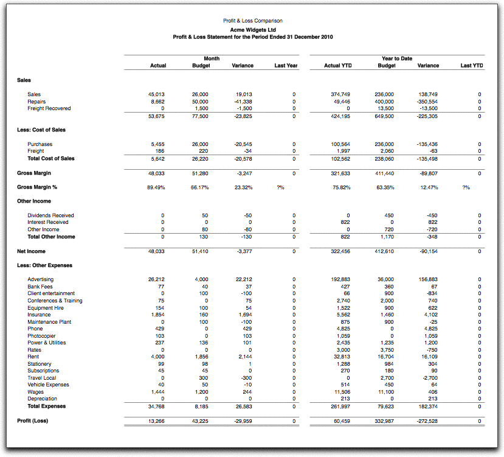
This prints out a list of what transactions are going to recur over the next nominated number of days, and what days they will recur on.
This prepares a summary of the amount and type of sales tax (PST in Canada) you have collected over the nominated period range.
This produces a statement of cash flows (in local currency) divided into Operating, Investment and Financing activities.
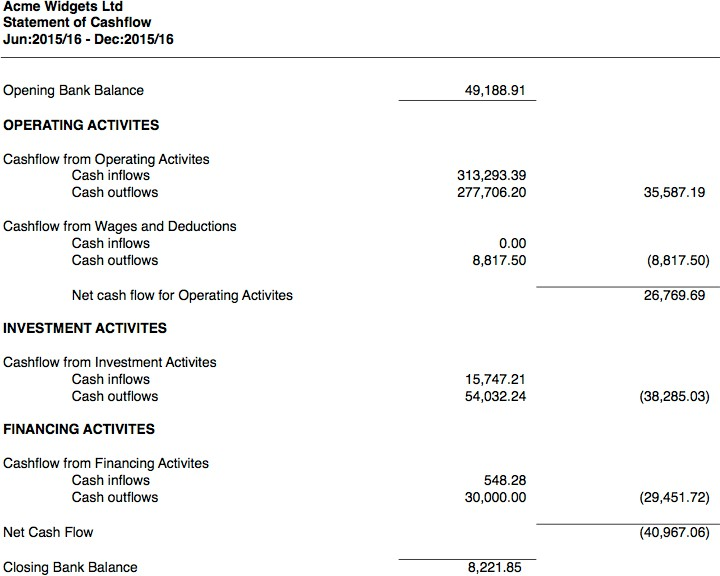
The report is calculated using the direct method, i.e. the general ledger codes that each cash transactions is coded to is inspected to determine whether it is Operating, Investment or Financing. For payments or receipts against invoices, the originating invoice's coding is used.
Whether an account code is Operating, Investment or Financing is determined by the setting in the Cash Flow Type field on the Cashflow Reporting tab on the account record:
Operational: The setting must be, or start with, "OP" Investment: The setting must be, or start with, "INV" Financing: The setting must be, or start with , "FIN"
Any other settings will be ignored (so the account will not appear in the report, probably giving rise to an imbalance).
It is possible to break the report down into "categories" of cash flow within the main Operating, Investment, or Financing areas. This is shown in the sample above where there is a section "Cashflow for Wages and Deductions".
To do this simply use any code starting with "OP" or "FIN" or "INV" (depending on which segment of the report it should be in). The example above was generated by assigning "OPW" to the cash flow setting for all the wage and deduction general ledger accounts. For reporting clarity, a label can be assigned to these additional codes using a special validation list named "Cashflow_Stmt", as shown.
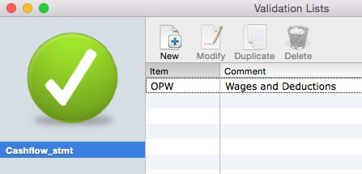
Assigning a label to a cash flow segment
If using a period range, the report will analyse posted transactions in that range as well as transactions in prior periods that were posted during the specified period range (in this manner it will pick up historic corrections, much like the GST/VAT Report). The method of analysis is determined by the Cash Basis or Invoice Basis setting.
The report will help if you are required to collect VAT/GST in more than one jurisdiction and/or currency. For example if you are registered for GST in both Australia and New Zealand, you would use the GST Report to prepare the GST return for your home country. You could then use the Tax by Currency report to determine the GST liability in the other country (which would be calculated over a different time range, and probably on a different basis, and hence you would use the Period Range option).
The report (when Previewed) also give access to any Guide forms and on-line filing available for the other jurisdictions. Note that before accessing on-line filing for another jurisdiction, you must run the associated Guide form at least once so you can record your tax number (which you will have received when you register for tax in that jurisdiction).
For more information on handling GST/VAT in multiple jurisdictions see Paying GST/VAT in Multiple Countries
Note that the segments are printed in alphabetic order of the code used (so "OPW" will print after "OP" and "OPA").
The statement of cashflow will also consider well-constructed journals against bank accounts. "Well constructed" in this context is a journal that contains a single bank account line (either as a debit, for inwards cash, or a credit, for outwards cash), and all other lines are on the "other side" of the journal (i.e. all credits and debits respectively). If the report does not balance, a list of journals that are not "well constructed" is appended to the report.
Foreign currency gain/loss journals are also included to account for realised gains/losses.
You can also force other journals to be included by having the text "CashFlow" in the Analysis field of the journal. You would do this if you have used a journal to correct a previous cash transaction. The cash flow is deemed to take place in the period of the journal, and credits will be treated as inwards cash.
Tax by Currency
An Audit report that summarises GST/VAT paid and received by tax code and currency. The report can be run for a nominated tax-cycle range or a nominated period range.
If the Tax Cycle option is selected the transactions in the specified tax cycles (based in the finalisations of the GST/VAT Report) are analysed. The transactions processed in the cycle range will be analysed based on the finalisation basis (Cash/Payments or Invoice/Accrual).
An Audit report that lists all (non-system) detail lines for the nominated period range, ordered by tax code, and summarised for each tax code by the currencies used (if any). The report can be run for all tax codes, or just a nominated tax code. Payments against invoices are excluded from the report, as the tax is on the originating invoice.
For locales that use a GST/VAT type tax, the tax cycle of the transaction is shown (i.e. the cycle when it appeared on a finalised GST/VAT report). Transactions that are yet to appear will have a tax cycle of zero.
Note: The Tax Coding report is period based, whereas the GST/VAT Report is based on the transaction date, and whether a transaction has been previously processed for GST/VAT or not. For this reason the two reports will almost certainly give different totals. The GST/VAT report should be used for GST/VAT preparation, the Tax Coding report is only for checking the
coding on transactions.
This Audit report summarises the general accounts to which the highlighted transactions were posted. Use it to determine how an arbitrary set of transactions were coded—for example, if you are looking to see why a particular account balance seems unreasonable.
If the List transactions option is on, each of the highlighted transactions will be also printed in journal form, showing the account code and debit/credit for each line.
This lists all the accounts in the chart of accounts with their opening balance at the specified From period, adjustments for the period range, and the year to date balance at the To period. The balances are listed in separate Debit and Credit columns.
It uses the standard Report Settings dialog box, so you can print movements and include transactions. You cannot however do a breakdown by category, department etc. on this report4.
It is better to print this report in Landscape orientation or with reduction—see
An Audit report that displays a simple trial balance as at a specified date. The report is based on posted transactions only.
manner.
You can determine the information content of each report by its name. For example Profit Monthly Comparison uses the “Profit” part format with the “Monthly” column headings, whereas Profit Actuals for rolling 12 Months has the same part format, but uses the “12 Months Actual” headings
The Department Profit and Loss reports list up to ten departments in columnar format (as opposed to one per page), allowing for easy comparison of performance across departments. These can be run for active departments, active departments with a nominated classification, active departments in a nominated group, or departments that are highlighted in the Department list. In this context, "active" means a department for which a transaction has been posted (or, if including unposted, has been entered) in the nominated period range for the report.
The best way to see if a report has the information you want is to preview it.
These reports contain information on actual performance with respect to budget. For this reason they will only be meaningful if you have entered budget information into MoneyWorks.
The budget reports are designed to print in landscape mode (sideways) on your printer. You will need to set the Page Setup for this, or alternatively set the reduction to 70%. The budget column headings are:
Column Description
Account: The account code and description;